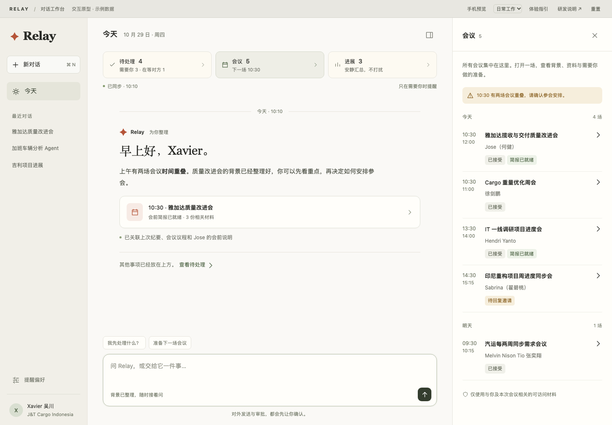
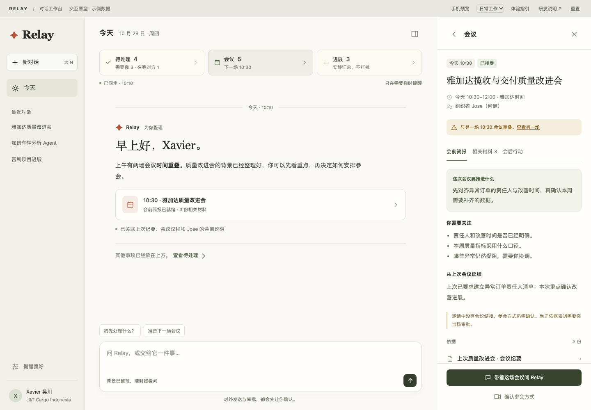
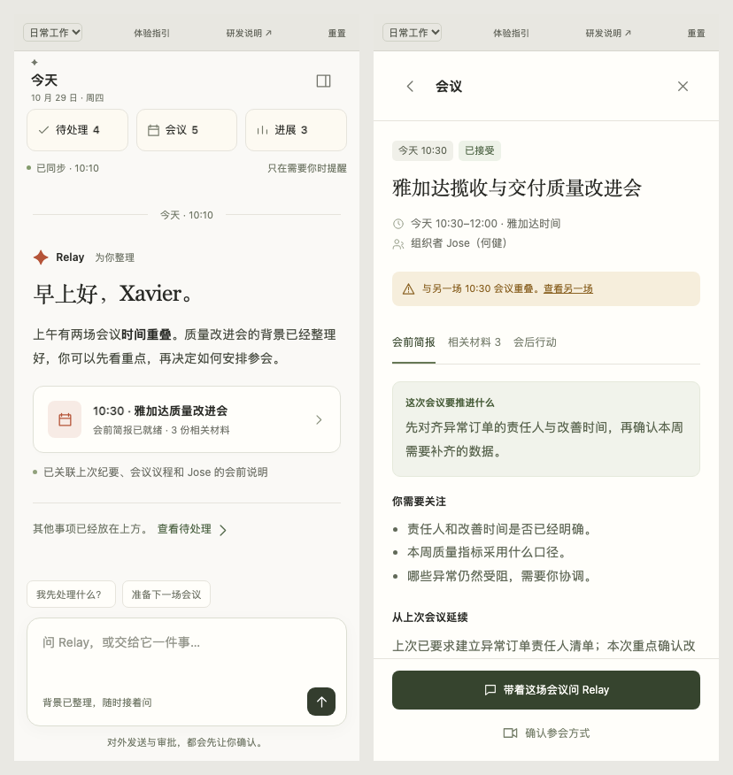

01 / 核心决策
对话是主工作区，工作入口是稳定的目录，侧栏是可关闭的详情空间。不再把每场会议的长摘要与整张卡片连续插入聊天，也不要求用户离开对话去三个独立页面处理工作。
| 现在的问题 | 新的设计 |
|---|---|
| 聊天被会议摘要和卡片淹没 | 一次有价值的提醒只写一条短消息和一个对象引用；完整背景在侧栏展开。 |
| “待处理／会议／进展”是分离页面 | 三个入口固定在对话顶部。切换仅改变工作侧栏，对话内容、输入草稿和滚动位置保留。 |
| 会议各有大卡片，扫描成本高 | 按日期排列紧凑列表，保留时间、名称、组织者、邀请状态与资料状态；点击单场会议展开。 |
| 为了理解事项要重新解释上下文 | “问 Relay”向输入框附加可移除的对象引用。发送时绑定对象身份与版本，由后端加载有权访问的上下文。 |
| 私聊容易变成噪声待办 | 私聊可作为相关材料，不因被引用就创建待办。界面明确展示“为何关联”；筛选责任仍在后端。 |
选择右侧详情，是为了让左侧继续承担稳定的对话导航，避免与会话历史混杂。用户可关闭侧栏专注聊天；它不会遮挡宽屏下的输入框。此布局是针对 Relay 的设计判断，不是照搬 Apple 或 Claude。
02 / 信息架构
三个入口的语义
| 入口 | 包含什么 | 计数口径 |
|---|---|---|
| 待处理 | 需要你推进的事项、你在等待的事项。每项含背景、当前状态、原因、相关资料与下一步。 | 展示分组数，不与原始消息数或承诺数混用。审批组内部另标“4 张申请”。“需要你”和“在等对方”分别统计。 |
| 会议 | 未来会议与当前相关会议；按日期展示，进入详情后查看准备、材料和行动。 | 会议场次。原型示例为今天 4 场、明天 1 场。正式产品必须固定并注明查询时间范围。 |
| 进展 | 已完成、已回复、停止跟踪等状态变化，保留对象链接和原因。 | 所选时间范围内的变化记录数。与未读数量分开；“不再跟进”不能计为已完成。 |
长期任务、记忆、定时任务、管理评估等既有能力不在这次原型范围内；正式迁移时继续保留现有入口或收进“更多”，不因本设计而删除。旧的三个页面路由可保留为深链接兼容层，打开新的对话工作台与对应侧栏。
03 / 核心交互
| 触发 | 反馈与结果 | 退出／保留 |
|---|---|---|
| 悬停顶部工作入口 | 精细指针设备停留约 320ms 后，显示最多 3 条只读预览。聚焦也能预览。 | 移出或 Esc 关闭。预览不承载唯一操作，不层叠浮层；点击才展开完整侧栏。 |
| 点击“待处理／会议／进展” | 侧栏切换到对应列表，入口显示选中状态。 | 主对话与输入草稿保留。关闭侧栏回到完整对话。 |
| 点击列表中的条目 | 在同一侧栏进入详情，显示返回列表与关闭入口。 | Esc／返回逐级退出；正式实现应恢复列表滚动位置和焦点。 |
| 点击相关材料 | 在侧栏内进入原文摘录，标注来源、时间、关联理由和材料可用性。 | 返回详情，避免叠加第二个浮窗。原始来源跳转应保留本工作台。 |
| 点击“问 Relay” | 输入框出现上下文标签并获得焦点。用户补充问题后发送。 | 不自动发送问题。标签可移除；移动端自动回到对话。用户原草稿不被清空。 |
| 点击“已处理” | 区分“收到提醒后处理完成”和“提醒前就已处理”。数量和进展同步更新。 | 显示可撤销反馈。时间归因用于质量指标，不把所有点击都计为有效提醒。 |
| 点击“不用跟了” | 选择不归我、不值得提醒、重复或暂时不跟进；只改变当前跟踪对象。 | 不自动改变其他事项或全局偏好，不等同于业务完成。 |
| 审批／回复邀请／对外发送 | 先展示明确对象和内容，确认后才执行。单张审批不能改变同组其他申请。 | 正式产品须有请求中、成功、失败和状态回读；原型仅本地模拟，无外部操作。 |
建议体验的五条路径
- 会议 → 10:30 质量改进会 → 相关材料 → Jose 私聊 → 返回 → 带着会议问 Relay。
- 待处理 → 版本验收 → 已处理 → 提醒前已处理 → 查看进展 → 撤销。
- 待处理 → 4 张需求申请 → 查看 Ricky 的申请 → 确认同意 → 检查其他 3 张仍待审批。
- 会议 → 14:30 同步会 → 回复邀请 → 接受 → 确认 → 查看会议与进展。
- 顶部演示场景切换“即时提醒／会后行动／同步失败”，再切换手机预览。
04 / 会议不是一张邀请卡
会议详情默认打开会前简报，分成三个固定区域：会前简报、相关材料、会后行动。用户不必阅读多段长文本才能知道是否需要准备。
| 区域 | 必须回答 | 缺失时 |
|---|---|---|
| 会前简报 | 这次会议推进什么？我需要关注什么？上次留下了什么？哪些信息还没确认？ | 明确“未找到直接相关材料”，仅保留已知时间与组织者；不根据会议标题扩写议程。 |
| 相关材料 | 材料是什么、何时产生、为什么与本会议相关？覆盖议程、直接附件、同系列历史纪要、相关消息。 | 区分不存在、暂无权限、读取失败、已失效；不能统一伪装成“无材料”。 |
| 会后行动 | 哪些行动明确分配给我？依据哪段纪要？截止时间是否明确？ | 会议未结束时不生成会后结论；没有纪要时保留待查状态。 |
关联准则
优先使用会议 ID、系列 ID、邀请中直接链接和消息中的明确引用；人员相同或标题相似只能成为检索线索，不能直接成为相关性的证明。每份材料应保存关联证据。私聊只显示与本事项相关的必要内容，并沿用现有访问权限。
多个会议同一时间时，显示冲突提示并允许跳到另一场；不替用户自动拒绝。找不到会议链接时，主操作改为“确认参会方式”，不展示无效的“加入会议”。会后行动通过原始会议与纪要 ID 去重，重复提取不能创建重复待办。
05 / 类别与优先级是两件事
“待处理／会议／进展”是内容类别，不是紧急程度。通知决策应独立于类别，避免把所有会议都当成紧急消息。
| 层级 | 触发与示例 | 表现 |
|---|---|---|
| 现在介入 | 现在获知会改变行动，例如会议 10 分钟后开始但参会方式缺失，或重要截止时间迫近。 | 一条简短主动消息＋一个对象入口，说明为什么现在提醒。不自动抢焦点、不强制打开详情；同一事件只提醒一次。 |
| 可安排处理 | 有明确责任但当前无需立即介入，例如明天截止的验收、尚未阻塞工作的审批。 | 进入待处理并更新入口计数，不新增长聊天卡片。 |
| 安静汇总 | 常规完成、已回复、用户选择停止跟踪。 | 进入进展。若完成解除了当前阻塞，可升级为“现在介入”，说明下一步可以做什么。 |
| 背景与候选 | 闲聊、仅用于理解的私聊、尚不能确认责任的内容。 | 不计入待处理、不推送。仅在相关事项的材料区按需呈现。 |
推送前必须核对最新状态、后续回复、过期信息与重复提醒。新消息尚未处理或数据过旧时，界面显示同步状态，后端暂停相关提醒。评价“没点击”的原因不能直接推断为无用。
06 / 状态与反馈约定
| 状态 | 展示 | 动作 |
|---|---|---|
| 初始加载 | 侧栏骨架、明确的同步提示；对话仍可见。 | 不显示未经确认的 0，也不触发空状态通知。 |
| 正常 | 同步时间、独立对象状态、资料可用性。 | 用户动作更新统一存储，同步反映于入口、列表、详情与进展。 |
| 空状态 | 说明“没有需要你处理的事／近期没有会议”，不填充无关推荐。 | 仍可继续对话。 |
| 同步失败 | 明确未更新、保留已缓存数据；本原型以失败面板演示入口与重试。 | 可重试；正式实现读取旧数据时加“可能过期”，涉及外部操作先重新校验。 |
| 资料不足 | 区分缺材料与“没有需要做的事”。 | 重新查找、请求补充或明确保留未知。 |
| 提交中／失败 | 操作按钮锁定，反馈目标对象；失败后恢复可操作并保留用户选择。 | 正式实现使用幂等键防重复请求，状态冲突时先刷新再确认。 |
| 已完成／停止跟踪 | 进入进展，保留来源与原因。二者文案和统计分开。 | 撤销仅适用于可逆的本地跟踪状态；已执行的外部审批不能声称可直接撤销。 |
原型在浏览器本地保存任务、审批、邀请与进展状态。顶部“重置”恢复示例。页面关闭后对话草稿和浏览位置不保证保留；正式产品应持久保存草稿和用户最近打开的工作对象。文件模式下浏览器若禁用本地存储，原型仍可运行，但刷新会恢复初始状态。
07 / 尺寸与可访问性
| 范围 | 布局 | 交互 |
|---|---|---|
| ≥ 981px | 左侧导航 174–222px；中央对话自适应；右侧详情 348–420px。对话正文最大宽度 780px。 | 侧栏默认显示，可关闭；主对话和详情各自滚动。 |
| 761–980px | 默认收起全局导航，保留中央对话与右侧详情。 | 工作入口不消失，关闭侧栏后对话获得更宽空间。 |
| ≤ 760px | 保留顶部三入口；列表和详情占满工作区；输入框留在对话页底部。 | 点击代替悬停；返回详情／列表逐级退，关闭回到原对话；带上下文提问时自动回到输入框。 |
手机端主要操作至少 44px 高。按钮有可访问名称、清晰聚焦边框，颜色不作为唯一状态线索。Esc 按“确认框 → 材料 → 详情 → 列表”逐级返回；弹层锁定焦点并在关闭后恢复。Enter 发送，Shift + Enter 换行，输入法组合期间不触发发送。尊重减少动态效果设置。
移动端没有额外一套业务导航：三入口始终与对话同属一个工作环境，避免对话标签和工作标签分别维护两套状态。桌面端的源材料全文也不以嵌套弹窗堆叠。
视觉基线
延续截图的暖白底色、米灰导航和少量陶土色品牌点缀。绿色只用于明确的选中或已就绪状态，琥珀色用于等待确认。字体采用系统中文无衬线；欢迎语与对象标题可使用系统宋体以保持安静的阅读感。完整变量见 design-tokens.json。
08 / 研发实施建议
以下组件和接口均是建议契约，不是已经核实存在的仓库实现。先映射现有 API、状态管理和权限层，再增补缺失能力。原型为离线单文件 HTML，无外部依赖；用于验证行为与布局，不应整体替换生产项目。
| 建议组件 | 职责 |
|---|---|
ConversationWorkspace | 主布局、响应式、保持会话与输入草稿。 |
WorkDock / WorkPeek | 三类计数与只读预览；不承担数据归类。 |
WorkInspector | 列表、对象详情、来源材料的统一导航与焦点管理。 |
MeetingDetail / MatterDetail | 会议准备、资料、行动项；待处理的责任、依据和下一步。 |
ContextComposer | 对象引用、可移除上下文标签、发送快照。 |
ProgressFeed / FeedbackDialog | 状态变化、质量反馈、时间归因与可逆跟踪操作。 |
统一身份，避免状态重复
{
"entity": { "type": "meeting", "id": "meeting_123", "version": 7 },
"presentationGroupId": "today_meetings",
"status": { "rsvp": "accepted", "prep": "ready" },
"notification": { "tier": "now", "reason": "join_method_missing", "eventId": "event_456" },
"sourceRefs": [
{ "id": "source_789", "type": "chat", "relation": "explicit_meeting_reference", "access": "allowed" }
],
"updatedAt": "2026-10-29T03:10:00Z"
}同一实体在对话、列表、详情、进展中引用同一个 ID；展示分组另有 groupId。不要复制完整业务对象到聊天消息里作为另一份状态。服务器重新检查权限，禁止把全部私聊长期塞入前端或每轮模型上下文。
建议能力映射
| 能力 | 请求中的关键信息 | 返回或约束 |
|---|---|---|
| 工作摘要与列表 | 用户、时间范围、类别、游标 | 固定计数口径、对象引用、更新水位与分页；不可直接用当前页长度冒充总数。 |
| 对象与资料详情 | entityRef、sourceRef、版本 | 访问校验后的内容、来源时间、关联理由、缺失或失败原因。 |
| 带对象对话 | message、entityRefs、sourceRefs、conversationId | 按权限与版本解析上下文；未发送前仅为本地草稿。 |
| 反馈与跟踪状态 | entityRef、notificationEventId、reason、expectedVersion、idempotencyKey | 区分有效提醒、过时提醒、重复、不相关；返回统一状态与新的摘要计数。 |
| 审批／邀请回复 | 独立业务 ID、确认内容、版本、幂等键 | 只作用于当前业务对象，完成后回读来源系统确认；失败不能乐观标成完成。 |
建议用现有推送通道更新工作存储；没有事件通道时，再选择短轮询。刷新只更新变化对象，不重置列表滚动、不抢输入焦点、不重复添加聊天消息。接收到的迟到响应不能覆盖较新的状态版本。
核心行为埋点
work_dock_open、entity_detail_open、source_open、context_attached、context_message_sent、feedback_submitted、external_action_confirmed。携带对象 ID、来源入口、通知事件和结果，不记录私聊全文。详情点击是查看行为，不直接计为“提醒有用”。
09 / 验收与推进顺序
- 先改展示框架：对话作为主工作区，现有三个业务列表接入统一侧栏。保持旧链接兼容，不同时重写底层归类。
- 再补上下文闭环：会议关联材料、来源解释、详情提问和统一状态同步。
- 最后调整通知：即时提醒只产生短摘要与对象引用，普通完成进入进展，去重与时机判断由后端负责。
| 验收项 | 通过标准 |
|---|---|
| 三入口 | 鼠标、键盘与触摸都可进入；切换不丢输入草稿和现有对话。 |
| 资料与会议 | 明确关联理由；没有议程时不生成推测；没有会议链接时不显示无效加入按钮。 |
| 合并展示 | 一张审批通过后，其他申请仍保持各自状态；会议邀请状态互不影响。 |
| 反馈 | 提醒前已完成与提醒后完成可区分；停止跟踪不算完成；可逆操作有撤销反馈。 |
| 一致性 | 数量、列表、详情、进展随同一状态更新，不依赖刷新整个页面。 |
| 窄屏 | 360px、390px 和 760px 无横向溢出，底部操作可见，长标题正常折行。 |
| 边界 | 加载、空状态、失败和会后行动有明确界面；权限失败和请求冲突在生产集成测试中补齐。 |
| 通知质量 | 区分查看、采纳与错误反馈；上线后比较重复提醒、过时提醒、完成行动耗时，而不是只比较点击率。 |
本次交付仅为交互原型与设计契约，不包含生产接入、真实模型响应、真实消息发送或已完成的权限审计。可运行的验证记录见 验证记录。上线仍需现有项目的组件测试、接口契约测试及真实设备检查。
10 / 参考资料与采用范围
以下资料查阅于 2026-10-29。这里吸收的是层级、连续性和可访问性原则，没有复制品牌资产或声称官方推荐了本方案。
| 一手资料 | 本设计中的应用 |
|---|---|
| Apple HIG · Sidebars | 稳定导航与内容分离；允许收起；空间不足时减少导航占用。右侧详情属于检查面板，不承担全局导航。 |
| Apple HIG · Popovers | 临时浮层内容要短且相关，一次只显示一个；窄屏使用完整页面。悬停预览是本方案的补充，点击始终有完整入口。 |
| Apple HIG · Accessibility | 信息不能只靠颜色或单一输入方式表达；支持键盘、触摸、清晰标签和减少动态效果。 |
| Claude 官方帮助 · Artifacts | 借鉴对话旁边承载可持续查看的工作内容，让聊天与对象详情相互衔接；并非照搬其具体产品界面。 |
11 / 关键画面


